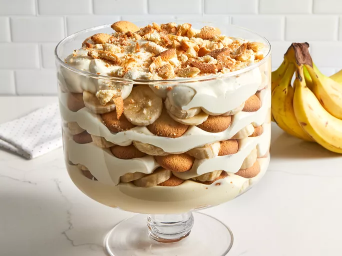

Banana Pudding

Description
This no-cook banana pudding recipe is easy to make and delicious layered with vanilla wafers and slices of banana. It's the best banana pudding you will ever find (or so I've been told by many)!
Ingredients
- Milk and pudding mix: This easy banana pudding recipe starts with vanilla pudding mix dissolved in cold milk.
- Sweetened condensed milk: Like so many of the most delicious desserts, this banana pudding contains a can of sweetened condensed milk.
- Vanilla: Vanilla extract enhances the flavor of the banana pudding.
- Frozen whipped topping: Fold frozen whipped topping (such as Cool Whip) into the pudding mixture for a rich, fluffy texture.
- Vanilla wafers: Vanilla wafers add more flavor and welcome crunch.
- Bananas: Of course, you'll need bananas! Slice them up just before you assemble the pudding.
Steps
- Whisk the pudding mix into the milk.
- Add the sweetened condensed milk and vanilla.
- Fold in the frozen whipped topping.
- Layer the mixture with the sliced bananas and vanilla wafers.